3 Diffusion Models
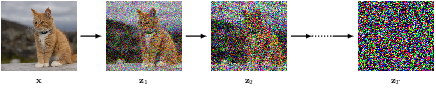
VAE models have an elegant structure, but they normally operate in the latent space of lower dimensionality, which can limit their ability to capture the complexity of the data distribution. Ever since the advent of residual networks, very deep neural networks can be trained effectively, so the idea has now been incorporated into almost all modern generative models. Besides, residual networks also require the data dimensionality kept constant throughout the networks. These two factors lead to diffusion models, which can be viewed as hierarchical VAEs, in that multiple VAE models are stacked on top of each other, with the latent space dimensionality of each VAE now being the same as the data dimensionality.
The forward encoder in diffusion models defines a series of conditional distributions, which, starting from the observed data, gradually adds noise to the data through a predefined schedule until the data is completely indistinguishable from Gaussian noise. The process is “predefined”: we define it when building the model and it’s not affected by the subsequent network training.
Because directly calculating the reverse conditional distribution is infeasible (unlike Normalizing Flows), we train a neural network to approximate the reverse decoder, which, starting from pure noise, attempts to remove the noise added in the forward process. The training objective is a lower bound approximation of the data likelihood, and the network predicts the noise added to the data at each step.
Maximizing the data likelihood is one possible training objective, but it’s not the only one. Another approach is score matching, which trains a network to match the gradients of the log data likelihood (the so-called score). We of course don’t know the data likelihood, even less its gradients, so a fair amount of approximations are (again) in order.
Guided diffusion adds some additional conditioning information during the reverse diffusion process to steer the generation process towards desired characteristics.
3.1 forward encoder
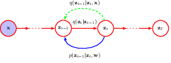
following the Bayesian tradition, we denote the hidden variables, i.e. the noisy images as z, and the observed image as x.
the forward encoder transforms an image to pure Gaussian noise, by adding some noise to the image at each step.
\[ q(\mathbf{z}_1 | \mathbf{x}) = \mathcal{N}(\mathbf{z}_1 | \sqrt{1 - \boldsymbol{\beta} _1} \mathbf{x}, \boldsymbol{\beta}_1 \mathbf{I}). \]
\[ q(\mathbf{z}_t | \mathbf{z}_{t-1}) = \mathcal{N}(\mathbf{z}_t | \sqrt{1 - \boldsymbol{\beta}_t} \, \mathbf{z}_{t-1}, \boldsymbol{\beta}_t \mathbf{I}). \]
We then calculate the conditional (on observed data) distributions of the hidden variables, and derive the reverse conditional (on next step hidden variable) distribution using Bayes’ rule.
3.1.1 diffusion kernel
because each step of the transformation is Gaussian, we can combine the Gaussian transformations between any two random points in time; for this reason, we can derive the hidden variable distribution at any time using just the original image, and the noise schedule up to that time.
\[ q(\mathbf{z}_1, \ldots, \mathbf{z}_t | \mathbf{x}) = q(\mathbf{z}_1 | \mathbf{x}) \prod_{\tau=2}^{t} q(\mathbf{z}_{\tau} | \mathbf{z}_{\tau-1}). \quad (20.5) \]
\[ q(\mathbf{z}_t | \mathbf{x}) = \mathcal{N}(\mathbf{z}_t | \sqrt{\alpha_t} \mathbf{x}, (1 - \alpha_t) \mathbf{I}). \quad (20.6) \]
\[ \alpha_t = \prod_{\tau=1}^{t} (1 - \beta_{\tau}). \quad (20.7) \]
\[ \mathbf{z}_t = \sqrt{\alpha_t} \mathbf{x} + \sqrt{1 - \alpha_t} \boldsymbol{\epsilon}_t \quad (20.8) \]
\[ q(\mathbf{z}_T | \mathbf{x}) = \mathcal{N}(\mathbf{z}_T | \mathbf{0}, \mathbf{I}) \quad (20.9) \]
\[ q(\mathbf{z}_T) = \mathcal{N}(\mathbf{z}_T | \mathbf{0}, \mathbf{I}). \quad (20.10) \]
since the final hidden variable is pure Gaussian noise, it does not depend on any other variable.
3.1.2 conditional distribuitons
after specifying the diffusion kernel, it is of interest to reverse the process, to arrive at the original image from pure Gaussian noise.
since we already have the forward diffusion kernel, to get the reverse distribution we’ll turn to the Bayes’ rule, as we have done many times before, and as we’ll do many times after.
however this turns out to be intractable, because to obtain the reverse conditional distribution, from zt to zt-1, we need the marginal distribution of zt-1, but this is impossible, since we have to integrate over the unknown data distribution.
\[ q(\mathbf{z}_{t-1} | \mathbf{z}_t) = \frac{q(\mathbf{z}_t | \mathbf{z}_{t-1})q(\mathbf{z}_{t-1})}{q(\mathbf{z}_t)} \quad (20.11) \]
\[ q(\mathbf{z}_{t-1}) = \int q(\mathbf{z}_{t-1} | \mathbf{x})p(\mathbf{x}) \, d\mathbf{x} \quad (20.12) \]
a more meleable problem is to obtain the reverse conditional distribution, while also conditioning on the observed image data. This is doable (if the observed data is available), since this is exactly the diffusion kernel we obtained in section 20.1.1.
\[ q(\mathbf{z}_{t-1} | \mathbf{z}_t, \mathbf{x}) = \frac{q(\mathbf{z}_t | \mathbf{z}_{t-1}, \mathbf{x})q(\mathbf{z}_{t-1} | \mathbf{x})}{q(\mathbf{z}_t | \mathbf{x})} \quad (20.13) \]
\[ q(\mathbf{z}_t | \mathbf{z}_{t-1}, \mathbf{x}) = q(\mathbf{z}_t | \mathbf{z}_{t-1}) \quad (20.14) \]
\[ q(\mathbf{z}_{t-1} | \mathbf{z}_t, \mathbf{x}) = \mathcal{N}(\mathbf{z}_{t-1} | \mathbf{m}_t(\mathbf{x}, \mathbf{z}_t), \sigma_t^2 \mathbf{I}) \quad (20.15) \]
all the distributions involved are Gaussian, so the density function can be solved analytically (by completing the square)
\[ \mathbf{m}_t(\mathbf{x}, \mathbf{z}_t) = \frac{(1 - \alpha_{t-1}) \sqrt{1 - \beta_t}\mathbf{z}_t + \sqrt{ \alpha_{t-1}} \beta_t\mathbf{x}}{1 - \alpha_t} \quad (20.16) \]
\[ \sigma_t^2 = \frac{\beta_t(1 - \alpha_{t-1})}{1 - \alpha_t} \quad (20.17) \]
this is very neat but when we generate new data from the model we don’t normally already have the image we want. for this reason we learn a neural network to do the generation instead.
3.2 reverse decoder
So the basic idea is to find a distribution p to approximate reverse distribution q. We’ll parameterise p with a deep neural network and train it to optimise the parameters, so that when the original data is available, the conditional distribution can reproduce the original image as faithfully as possible; and when origial image not available, the model has been well trained to generate images from the data distribution.
\[ p(\mathbf{z}_{t-1} | \mathbf{z}_t, \mathbf{w}) = \mathcal{N}(\mathbf{z}_{t-1} | \mathbf{\mu} (\mathbf{z}_t, \mathbf{w}, t), \beta_t \mathbf{I}) \quad (20.18) \]
\[ p(\mathbf{x}, \mathbf{z}_1, \ldots, \mathbf{z}_T | \mathbf{w}) = p(\mathbf{z}_T) \prod_{t=2}^{T} p(\mathbf{z}_{t-1} | \mathbf{z}_t, \mathbf{w}) \, p(\mathbf{x} | \mathbf{z}_1, \mathbf{w}) \quad (20.19) \]
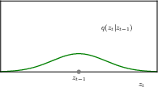 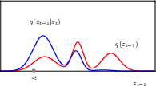
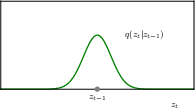 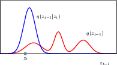
the reverse conditional distribution, parameterised by a deep neural network
the joint distribution of the reverse process, parameterised by the deep neural network
3.2.1 training the decoder
to train the network, our first attempt is to directly maximise the data likelihood, which can be obtained by marginaling out the hidden variables.
this is clearly impossible, since we’d need the posterior in the first place.
\[ p(\mathbf{x}|\mathbf{w}) = \int \cdots \int p(\mathbf{x}, \mathbf{z}_1, \ldots, \mathbf{z}_T|\mathbf{w}) \, d\mathbf{z}_1 \cdots d\mathbf{z}_T \quad (20.20) \]
3.2.2 evidence lower bound
as a second attempt, we’ll decompose the data likelihood function into two terms, the ELBO term and the KL divergence term.
This can be done, again, by applying the good old rules of probability. Here we decompose the joint distribution of {{observed and hidden}} variables.
\[ p(\mathbf{x},\mathbf{z}|\mathbf{w}) = p(\mathbf{x}|\mathbf{z},\mathbf{w})p(\mathbf{z}|\mathbf{w}) \quad (20.24) \]
\[ p(\mathbf{x}|\mathbf{w}) = \frac{p(\mathbf{x},\mathbf{z}|\mathbf{w})}{p(\mathbf{z}|\mathbf{x},\mathbf{w})} \]
taking the log, and integrate over the hidden variables give us
\[ \begin{aligned} \ln p(\mathbf{x}|\mathbf{w}) &= \int q(\mathbf{z}) \ln p(\mathbf{x}|\mathbf{w}) \, d\mathbf{z} \\ &= \int q(\mathbf{z}) \ln \frac{p(\mathbf{x},\mathbf{z}|\mathbf{w})}{p(\mathbf{z}|\mathbf{x},\mathbf{w})} \, d\mathbf{z} \\ &= \int q(\mathbf{z}) \ln \frac{p(\mathbf{x},\mathbf{z}|\mathbf{w}) q(\mathbf{z})}{p(\mathbf{z}|\mathbf{x},\mathbf{w}) q(\mathbf{z})} \, d\mathbf{z} \\ &= \int q(\mathbf{z}) \ln \frac{p(\mathbf{x},\mathbf{z}|\mathbf{w})}{q(\mathbf{z})} \, d\mathbf{z} - \int q(\mathbf{z}) \ln \frac{p(\mathbf{z}|\mathbf{x},\mathbf{w})}{q(\mathbf{z})} \, d\mathbf{z} \\ &= \mathcal{L}(\mathbf{w}) + \text{KL}(q(\mathbf{z})||p(\mathbf{z}|\mathbf{x},\mathbf{w})) \quad (20.21) \end{aligned} \]
the KL divergence term is the difference between two distributions, the model of hidden variables, and an approximate posterior of choice.
\[ \text{KL}(q(\mathbf{z})||p(\mathbf{z}|\mathbf{x},\mathbf{w})) = -\int q(\mathbf{z}) \ln \frac{p(\mathbf{z}|\mathbf{x},\mathbf{w})}{q(\mathbf{z})} \, d\mathbf{z} \quad (20.23) \]
the ELBO term is another integral term, integrating over the same approximate posterior. We can use the ELBO as a surrogate target, because the KL divergence term is non-negative, as such maximising ELBO also maximises the data likelihood.
\[ \mathcal{L}(\mathbf{w}) = \int q(\mathbf{z}) \ln \frac{p(\mathbf{x}, \mathbf{z}|\mathbf{w})}{q(\mathbf{z})} \, d\mathbf{z} \quad (20.22) \]
by lower bound we mean
\[ \ln p(\mathbf{x}|\mathbf{w}) \geq \mathcal{L}(\mathbf{w}) \quad (20.25) \]
Now let’s take write out the ELBO and take a close look at its components.
\[ \begin{aligned} \mathcal{L}(\mathbf{w}) &= \mathbb{E}_{q} \left[ \ln \frac{p(\mathbf{z}_T) \prod_{t=2}^{T}p(\mathbf{z}_{t-1}|\mathbf{z}_t, \mathbf{w}) p(\mathbf{x} | \mathbf{z}_1, \mathbf{w}) }{q(\mathbf{z}_1|\mathbf{x}) \prod_{t=2}^{T}q(\mathbf{z}_t|\mathbf{z}_{t-1} , \mathbf{x})} \right] \\ &= \mathbb{E}_{q} \left[ \ln p(\mathbf{z}_T) + \sum_{t=2}^{T} \ln \frac{p(\mathbf{z}_{t-1}|\mathbf{z}_t, \mathbf{w})}{q(\mathbf{z}_{t}|\mathbf{z}_{t-1}, \mathbf{x})} + \ln p(\mathbf{z}_1|\mathbf{w}) + \ln p(\mathbf{x}|\mathbf{z}_1, \mathbf{w}) \right] \quad (20.26) \end{aligned} \]
where \[ \mathbb{E}_{q}[\cdot] = \int \cdots \int q(\mathbf{z}_1|\mathbf{x}) \left[ \prod_{t=2}^{T}q(\mathbf{z}_t|\mathbf{z}_{t-1}) \right] [\cdot] \, d\mathbf{z}_1 \cdots d\mathbf{z}_T \quad (20.27) \]
Note that we can choose ANY approximate posterior function, but the one we ACTUALLY choose is the forward encoder distribution. This is no coincidence, we introduced the forward encoder, exactly for the purpose that it can be used here.
The first term of the ELBO is constant w.r.t. the model parameters and is thus ignored.
For the second term, we can first sample zt-1 using 20.3, then sample zt using 20.4, then we can compute p and q with no problem. This is procedurally right, however the estimation will be very noisy, since we consecutively did two sampling steps.
The third term is constant w.r.t. the model parameters and is thus ignored.
For the fourth term we can first sample z1 and then calculate the value.
\[ \mathbb{E}_{q}[\ln p(\mathbf{x}|\mathbf{z}_1, \mathbf{w})] \approx \frac{1}{L} \sum_{l=1}^{L} \ln p(\mathbf{x}|\mathbf{z}_1^{(l)}, \mathbf{w}) \quad (20.28) \]
3.2.3 rewriting the ELBO
As a third attempt, we will further decompose the second term of the ELBO, again by applying the good old rules of probability. This time we apply them on the joint distribution of the adjacent latent variables in the forward encoder.
we have the reverse process in the numerator, we want to also have the reverse process in the denominator to match it.
\[ q(\mathbf{z}_t | \mathbf{z}_{t-1}, \mathbf{x}) = \frac{q(\mathbf{z}_{t-1} | \mathbf{z}_t, \mathbf{x})q(\mathbf{z}_t | \mathbf{x})}{q(\mathbf{z}_{t-1} | \mathbf{x})} \quad (20.29) \]
\[ \ln \frac{p(\mathbf{z}_{t-1}|\mathbf{z}_t, \mathbf{w})}{q(\mathbf{z}_t|\mathbf{z}_{t-1}, \mathbf{x})} = \ln \frac{p(\mathbf{z}_{t-1}|\mathbf{z}_t, \mathbf{w})}{q(\mathbf{z}_{t-1}|\mathbf{z}_t, \mathbf{x})} + \ln \frac{q(\mathbf{z}_{t-1}|\mathbf{x})}{q(\mathbf{z}_t|\mathbf{x})} \quad (20.30) \]
The second term on the RHS is independent of model parameters (remember they are defined by the forward encoder) and is thus ignored. The first term is two distributions of the same variable, so we are again dealing with a KL divergence term.
Using this, we can rewrite the ELBO as 20.31
Now the ELBO consist of two terms, which we call the reconstruction term and the consistency term.
The reconstruction term is the logp weighted by z1, and thus measures how much we can reconstruct the data once the latent variable distribution is know. The consistency term is the KL divergence between the forward diffusion distribution and the reverse decoder network. So now we are finally able to connect what we need to compute, the (approximate) data likelihood, to what we have actually defined, the forward diffusion process and the backward denoising neural network. And we can happily proceed with the parameter optimization that we are so fond of.
Since the two distributions in the KL divergence are both Gaussian, the divergence can be easily computed. 20.33
3.2.4 predicting the noise
we are already able to optimize the model parameters, by matching the reverse denoising network to the forward diffusion network, by representing the KL devergence as the squared difference between the means of the forward and reverse process.
it turns out we can use a simply trick, not modeling the mean of the reverse process, but the noise added to the latent variable, to improve the training and the generated image quality.
it also turns out that when using this formulation, the reconstruction term can be viewd as a special case of the consistency term and merged together. So now we are left with a simple training procedure as follows:
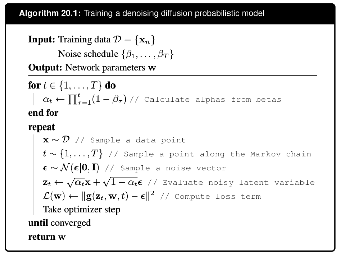
3.2.5 generating new samples
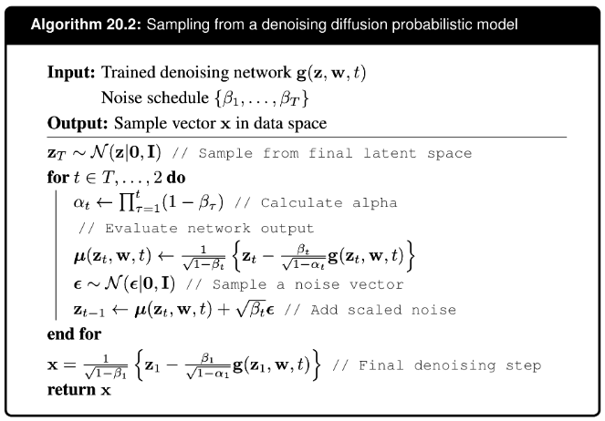
3.3 score matching
The denoising diffusion models discussed so far in this chapter are closely related to another class of deep generative models that were developed relatively independently and which are based on score matching. These make use of the score function or Stein score, which is defined as the gradient of the log likelihood with respect to the data vector
Here it is important to emphasize that the gradient is with respect to the data vector, not with respect to any parameter vector. Since the score function is the gradient wrt the input data
- it is vector-valued, and has the same dimensionality as the input.
- integrating the score function over the data space gives the log data likelihood, up to a constant.
So if we parameterize the score function as s(x, w), optimize the parameters w so that the parameterized score matches the empirical data score, we have effectively modeled the data distribution. And if we can further generate samples using the parameterized score function, we have built a generative model of the data that we can sample from.
Figure 20.5 shows an example of a probability density in two dimensions, along with the corresponding score function.
define a model for the data, calculate the logp and the score function define a second model for the score, optimizing the parameters by matching the data score function do sampling using the parameterized score model
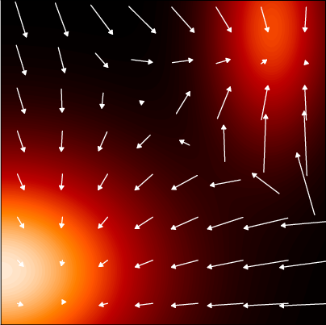 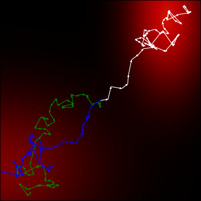
3.3.1 score loss function
the training match the model score to the data distribution score.
\[ J(\mathbf{w}) = \frac{1}{2} \int \left\| \mathbf{s}(\mathbf{x}, \mathbf{w}) - \nabla_{\mathbf{x}} \ln p(\mathbf{x}) \right\|^2 p(\mathbf{x}) \, d\mathbf{x} \quad (20.43) \]
of course this is only theoretically; we don’t actually know the data distribution. we now move on to workarounds.
3.3.2 modified score loss
we first approximate the data distribution with the empirical one \[ p_{\mathcal{D}}(\mathbf{x}) = \frac{1}{N} \sum_{n=1}^{N} \delta(\mathbf{x} - \mathbf{x}_n) \quad (20.44) \]
since the empirical distribution is not differentiable, we then smooth it with the Parzen estimator \[ q_{\sigma}(\mathbf{z}) = \int q(\mathbf{z} | \mathbf{x}, \sigma)p(\mathbf{x}) \, d\mathbf{x} \quad (20.47) \]
using this result the loss function can be modified to \[ J(\mathbf{w}) = \frac{1}{2N} \sum_{n=1}^{N} \int \left\| \mathbf{s}(\mathbf{z}, \mathbf{w}) - \nabla_{\mathbf{z}} \ln q(\mathbf{z}|\mathbf{x}_n, \sigma) \right\|^2 q(\mathbf{z}|\mathbf{x}_n, \sigma) \, d\mathbf{z} + \text{const.} \quad (20.51) \]
in the end, note we are matching scores of the latents, not the data.
3.3.3 noise variance
3.3.4 stochastic differential equations
We have seen that it is helpful to use a large number of steps, often several thousand, when constructing the noise process for a diffusion model. It is therefore natural to ask what happens if we consider the limit of an infinite number of steps, much as we did for infinitely deep neural networks when we introduced neural differential equations. In taking such a limit, we need to ensure that the noise variance \(\hat{\beta}_t\) at each step becomes smaller in keeping with the step size. This leads to a formulation of diffusion models for continuous time as stochastic differential equations. Both denoising diffusion probabilistic models and score matching models can then be viewed as a discretization of a continuous-time SDE.
the forward process We can write a general SDE as an infinitesimal update to the vector \(\mathbf{z}\) in the form
\[ dz = f(\mathbf{z}, t) \, dt + g(t) \, d\mathbf{v} \quad (20.55) \]
with drift and diffusion terms, respectively, where the drift term is deterministic, as in an ODE, but the diffusion term is stochastic, for example given by infinitesimal Gaussian steps. Here the parameter \(t\) is often called ‘time’ by analogy with physical systems. The forward noise process (20.3) for a diffusion model can be written as an SDE of the form (20.55) by taking the continuous-time limit.
the reverse process rooted in the time-reversibility of stochastic processes
For the SDE (20.55), there is a corresponding reverse SDE (Song et al., 2020) given by
\[ dz = \left\{ f(\mathbf{z}, t) - g^2(t) \nabla_{\mathbf{z}} \ln p(\mathbf{z}) \right\} dt + g(t) \, d\mathbf{v} \quad (20.56) \]
where we recognize \(\nabla_{\mathbf{z}} \ln p(\mathbf{z})\) as the score function. The SDE given by (20.55) is to be solved in reverse from \(t = T\) to \(t = 0\).
equal-spaced solver To solve an SDE numerically, we need to discretize the time variable. The simplest approach is to use fixed, equally spaced time steps, which is known as the Euler–Maruyama solver. For the reverse SDE, we then recover a form of the Langevin equation. However, more sophisticated solvers can be employed that use more flexible forms of discretization.
adaptive-step solver For all diffusion processes governed by an SDE, there exists a corresponding deterministic process described by an ODE whose trajectories have the same marginal probability densities \(p(\mathbf{z}|t)\) as the SDE (Song et al., 2020). For an SDE of the form (20.56), the corresponding ODE is given by
\[ \frac{d\mathbf{z}}{dt} = f(\mathbf{z}, t) - \frac{1}{2} g^2(t) \nabla_{\mathbf{z}} \ln p(\mathbf{z}). \quad (20.57) \]
The ODE formulation allows the use of efficient adaptive-step solvers to reduce the number of function evaluations dramatically. Moreover, it allows probabilistic diffusion models to be related to normalizing flow models, from which the change-of-variables formula (18.1) can be used to provide an exact evaluation of the log likelihood.
3.4 Guided diffusion
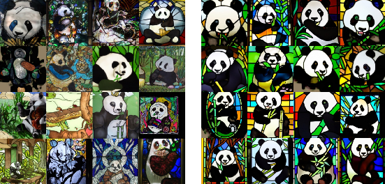 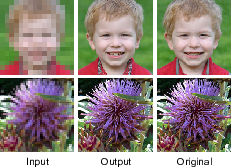